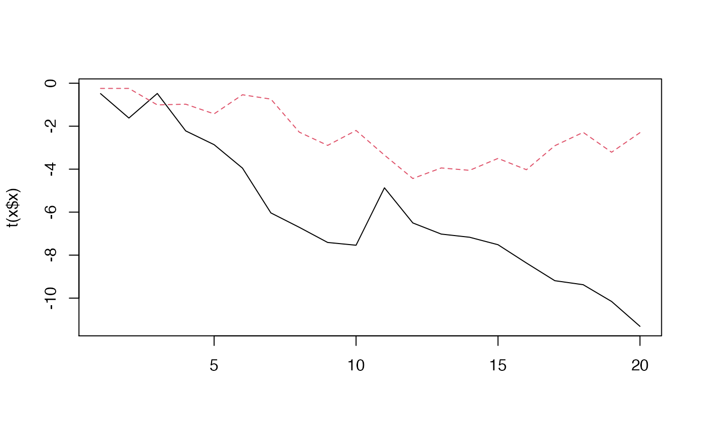

Simulate from a DFA
sim_dfa( num_trends = 1, num_years = 20, num_ts = 4, loadings_matrix = matrix(nrow = num_ts, ncol = num_trends, rnorm(num_ts * num_trends, 0, 1)), sigma = rlnorm(1, meanlog = log(0.2), 0.1), varIndx = rep(1, num_ts), extreme_value = NULL, extreme_loc = NULL, nu_fixed = 100, user_supplied_deviations = NULL )
Arguments
| num_trends | The number of trends. |
|---|---|
| num_years | The number of years. |
| num_ts | The number of timeseries. |
| loadings_matrix | A loadings matrix. The number of rows should match the
number of timeseries and the number of columns should match the number of
trends. Note that this loadings matrix will be internally manipulated by
setting some elements to 0 and constraining some elements to 1 so that the
model can be fitted. See |
| sigma | A vector of standard deviations on the observation error. Should
be of the same length as the number of trends. If not specified, random
numbers are used |
| varIndx | Indices of unique observation variances. Defaults to |
| extreme_value | Value added to the random walk in the extreme time step. Defaults to not included. |
| extreme_loc | Location of single extreme event in the process. The same
for all processes, and defaults to |
| nu_fixed | Nu is the degrees of freedom parameter for the t-distribution, defaults to 100, which is effectively normal. |
| user_supplied_deviations | An optional matrix of deviations for the trend random walks. Columns are for trends and rows are for each time step. |
Value
A list with the following elements: y_sim is the simulated data,
pred is the true underlying data without observation error added, x is
the underlying trends, Z is the manipulated loadings matrix that is fed
to the model.
Examples
#> [1] "y_sim" "pred" "x" "Z" "sigma"set.seed(42) x <- sim_dfa(extreme_value = -4, extreme_loc = 10) matplot(t(x$x), type = "l");abline(v = 10)